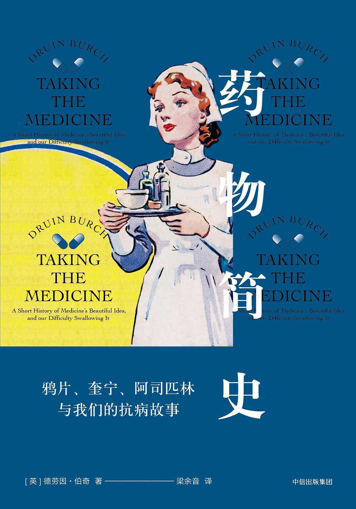

|  |
药物简史：鸦片、奎宁、阿司匹林与我们的抗病故事 |
引言
病人的脖子肿了起来，两侧各鼓出一个血包。血没有流得满地都是，而是被封闭在她的体内。她颈部的压力开始增加，两个番茄大小的肿块挤压着周边组织。病人开始呼吸困难。两处内出血尽管不比淤青严重多少，却压迫了她的气管。肿块最终压裂了气管。她死了。
医疗干预是危险的。无论你多么小心，有时还是会搞砸。如果事故原因是一支粗大的针头，这还比较容易理解，但如果只是一粒药丸，理解起来就有点困难了。而危险品并不一定要刃口锋利。我曾经给心肌梗死（myocardial infarction，MI）病人服用溶栓药物，然后发现他们的舌头快速充血肿胀，这让他们一下子窒息。还有些人已经因中风而昏厥，药物在让他们的心脏复苏的同时，却让血液猛地涌入大脑。就算死亡发生得没那么具有戏剧性，也一样是真正的死亡。药物的伤害有时无声无息，不易察觉。有些药让人比平时更神志不清，有些药让人衰老得更快一些。有些癌症病人会内出血，并呕血不止。当你预计会发生不良症状，就很容易对药物加速症状发生的后果视而不见。
第一部分 前现代药物
第1章 早期医学与鸦片
毫无疑问，罂粟确实是一种药物。它能带来熟睡与快乐，缓解忧郁及呼吸短促，对腹泻效果显著。最重要的是，它能消除疼痛。奥斯卡·王尔德晚年在穷困潦倒中奄奄一息，医生诊断他得了致命的脑膜炎，并用吗啡和鸦片为他镇痛。到最后，即1900年11月，他们到了只能假装给他注射的地步。因病痛而只余一半神志的王尔德不得不把手塞到嘴里，以免尖叫出声。医生不再对他使用吗啡，这无疑很残忍，但也使王尔德得以苟延残喘。罂粟具有消除窒息感的作用，不是因为它能帮助呼吸，恰恰相反，它消除的是人们对呼吸不畅的感知。这减少了人们的痛苦，但同时也可能缩短他们的生命。
是什么让这些早期药物得以被人类发现呢？如果有样东西能很快让人呕吐、出汗、出现幻觉或失去意识，那你立刻就能发现结果。如果一个人的肠道或膀胱出现异常，他（或她）第二天就会告诉别人。有这样效果的药物很容易被圈定，就像人们发现什么东西好吃一样，而较为微弱或长期的效果就不那么容易被发现。许多慢性毒药都曾被人忽视。罗马人曾用铅来增加酒的甜味，但要等到数十年后他们才发现，此后痛苦而缓慢的死亡就是由这种溶解在酒中的金属造成的。有益的药效如果不是即时、强烈、明白无误的话，也很容易被忽视。从吃下的食品到花园里的植物，人们身边到处都是含有活性药物成分的物质，但他们却缺少察觉的方法。
第2章 诡辩与鸦片酊
我们今天对鸦片心存恐惧，部分原因是毒品斗争产生的副作用。由于运输古柯叶的罪责与运输可卡因相同，运输高浓度吗啡又与运输未经处理的罂粟乳液同罪，因此效力强的药品就比较占优。如果你要冒险生产及运送非法药物，最有利的做法就是将其制成尽可能浓缩的形式，这就把毒贩子的违法风险转化成了他们客户的生理风险。海洛因已经寻隙进入各个城市，而它在整个历史时期都很常见的较为温和的替代品——罂粟茶、自制的鸦片酊等——却消失不见了。保留下来的只有对罂粟美丽外表的喜爱。
直到今天，医学中也很少有哪项操作比什么都不做更难。医学的设立是基于病人对受助的渴求与医生对助人的渴求，这种渴求压倒了理智。要什么都不做，或者说承认无能为力，其难度是巨大的。就像政治家面对他们实际上控制不了的问题时，也需要做点儿什么——随便什么都好，医生也被迫有所作为。但当医生和政治家开始当真以为自己十分重要时，危险就会随之而来。人们希望医生自信、肯定，能够提供治疗。自信能让医生更受人们信任，因而也逐渐融入了医生的性格之中。重要的是说服人们相信你的判断——如果要让人们感到被关心，如果要让他们对遵从医嘱感到足够安全，或者至少能得到些安慰，而说服别人最简单的方法，就是先说服自己。
“至于彻底治愈的方法，”西德纳姆写道，“一种完美无缺的、能让病人连患病的可能性都不复存在的方法，这就是种谎言。它和真理一起被埋在深井之底，在大自然最深的隐蔽之处，我不知道能由谁、在什么时候将它带到光天化日之下。”他的确是在以良言相劝，但这绝不是担惊受怕的病人想要听到的。病人希望有人能提供信心与希望，而不是鲁莽地提出怀疑。
第3章 自信与奎宁
对于第一世界来说，疟疾如今只是在度假期间才需要考虑的问题。而在其他地区，每年都有将近7亿人患病，数百万人（多数是非洲儿童）死亡。疟疾没有疫苗，但药物可以有效抵御和治疗这种疾病。最早的药物是南美的金鸡纳树皮，其中含有一种叫作奎宁的化合物，能够杀伤疟原虫。
讲的是欧洲各种药物的发现、使用历史，故事很有趣，只是因为故事背景是国外且年代久远，读起来总是比较慢。